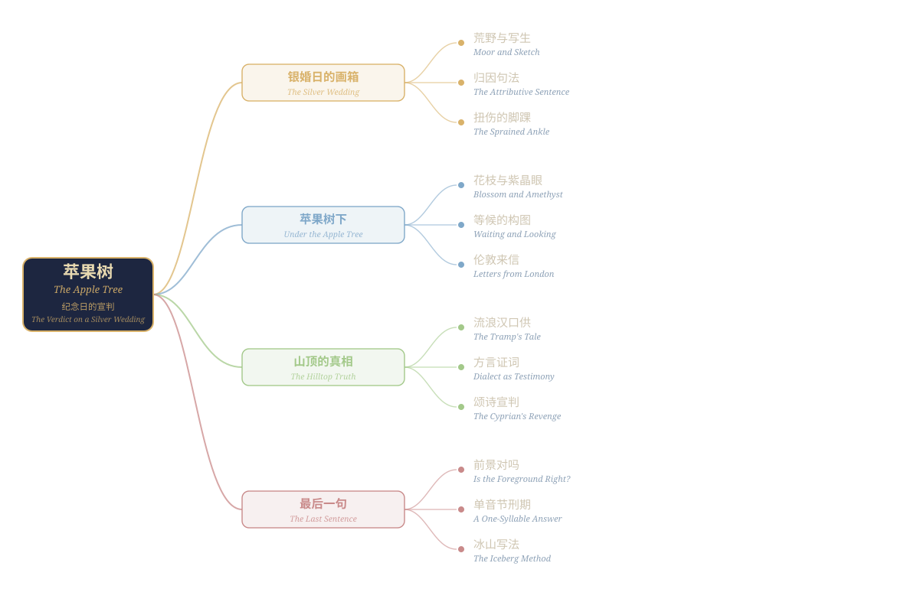

苹果树
〇 · 书籍信息
基本信息
| 书名 | 《苹果树》（The Apple Tree）——题词即判决书：「苹果树、歌声和金子」——欧里庇得斯《希波吕托斯》的爱神颂诗，在小说开卷就完成了对男主角的起诉 |
|---|---|
| 作者 | 高尔斯华绥（1867–1933）：律师出身的作家，《福尔赛世家》的作者——他一生专门审理「有产者的道德案件」：本书是他篇幅最短的判决，也是最重的一案 |
| 结构 | 框形结构：银婚日的荒野（现在）→ 二十六年前的春天（闪回）→ 山顶的真相（流浪汉口供）→ 「对。」（回到现在）——全书像一场婚礼纪念日的现场审判：纪念日的功能是宣判 |
| 体裁 | 中篇 + 希腊悲剧框架：题词与颂诗是「歌队」，流浪汉是「报信人」（messenger）——维多利亚小说的框架里装了一台欧里庇得斯的发动机 |
| 一句话 | 他为了文明放弃了她：二十六年后，一个陌生人告诉他她死了——「姑娘为了爱情会做出这种事来。她的心碎啦。可我们一直什么都不知道。」而他的回答只有一句：「前景画得对吗？」——「对。」 |
一 · 核心主题总览
一棵开花的老苹果树里埋着四组母题：① 框架即审判（全书引擎）
银婚日是纪念日，更是宣判日：斯特拉提议故地重游，流浪汉在坡下讲出她早已死去的真相。高尔斯华绥让「庆祝爱的胜利的日子」变成「爱的罪案复查日」——框形结构的天然功能就是司法复核。
② 春天的激情与责任的算术
剑桥学生阿什赫斯特扭伤脚踝，被农家女梅甘收留：五月开满苹果花的荒野=激情的自然辖区；伦敦的来信=文明的责任清单。他在两者之间选了后者——并且一辈子不知道这算不算选错。
③ 文明与自然之爱
梅甘代表未被文明驯化的一切：方言、直觉、不识字的忠诚；斯特拉代表文明的取景框：水彩、写生、体面。高尔斯华绥的冷峻在于：他不说哪个更好——他只展示两种爱各自由什么材料构成，以及哪一种会死。
④ 康沃尔方言与真话
流浪汉的口供全用土音：'tes（it is）、'ad（she had）、knu（knew）。方言在本书里不是色彩，是证词：只有不会说标准英语的人，才能说出唯一没有修饰的真相。
二 · 第一段 银婚日的画箱—— 荒野 · 写生 · 四月余晖 ——
开篇 · 荒野与写生
银婚日，阿什赫斯特夫妇驱车重游托基郊野——「这是斯特拉的主意，她天性浪漫善感」。叙述的第一句就完成了人物鉴定：浪漫善感的主意由她出，而纪念碑式的旅程其实是审判的传票。四月落日的余晖里，落叶松的叶子散发着柠檬般的清香——全书的一切感官细节都在为闪回预热：同一个荒野，二十六年前开过另一种花。
◆ 语言学习 · 开篇 · 框架
| silver-wedding /ˈsɪlvəˌwedɪŋ/ | n. 银婚（25 周年）—— 例句：in their silver-wedding day（开篇）。纪念日词族：golden wedding 金婚；银婚=爱的镀银纪念，本书让它兼作庭审日 |
|---|---|
| moor /mʊə/ | n. 荒野，高地 —— 例句：the outskirts of the moor。英国文学的地理关键词：moorland；荒野=激情的自然辖区 |
| sketch /sketʃ/ | n./v. 写生，速写 —— 例句：took his wife's sketch（结尾）。斯特拉的世界观：一切经过取景框 |
| larch /lɑːtʃ/ | n. 落叶松 —— 例句：golden furze and feathery green larches。名物词：毛羽状叶=「羽毛的绿」——高尔斯华绥的植物形容词从不吝啬 |
句型 ｜ 「…between the golden furze and the feathery green larches smelling of lemons in the last sun of April—this… seemed fitting to the decisive nature of one who sketched in water-colours, and loved romantic spots.」——地点铺陈 + 破折号聚焦 + 人格归因：风景描写最后落到「性格」上——高尔斯华绥写景的句法是「归因句」：每一处风景都被判给了某个人物的心性。
一切从脚踝开始
闪回启动：二十六年前，剑桥学生阿什赫斯特与同学徒步康沃尔，在荒野扭伤脚踝——被农家收留，由侄女梅甘照护。「扭伤」是全书的引信：文明的脚第一次踩进自然的辖区，就再也拔不出来。梅甘在他养伤的那几个星期里，每天做的事只有一件：把他当成一件需要照料的东西——而这是剑桥教不了他的一课：被无条件地照料。
◆ 语言学习 · 闪回 · 引信
| sprain /spreɪn/ | v./n. 扭伤 —— 例句：a sprained ankle（旅程）。运动医学词；sprain=「被强行扭转」——引信的词源就是姿势的错误 |
|---|---|
| farmhouse /ˈfɑːmhaʊs/ | n. 农舍 —— 例句：taken in at a farmhouse。收留词组：take sb. in——这个短语同时有「欺骗」义：语言的预感 |
| tend /tend/ | v. 照料 —— 例句：she tended him daily。tender（温柔的）同根：照料与温柔在词源上是同一件事 |
| gratitude /ˈɡrætɪtjuːd/ | n. 感激 —— 阿什赫斯特的起点情绪：感激+怜悯+欲望的混合配方——高尔斯华绥冷静地标出三种成分的配比变化 |
习语 ｜ take sb. in 收留；蒙骗——一个短语的两种命运；out of one's depth 超出能力所及——阿什赫斯特在梅甘的忠诚面前，是 swimming out of his depth：他以为自己在施舍，其实在被丈量。
三 · 第二段 苹果树下的五月—— 梅甘 · 花枝 · 伦敦来信 ——
梅甘与老苹果树
老苹果树下的相会：梅甘发间插着一枝苹果花，眼睛像未经琢磨的紫水晶。高尔斯华绥把全部诗意预算花在四月的荒野与一棵树上：花=欲望的合法化仪式。梅甘不识字、不设防、不会「体面地」拒绝或推进——她只有一个动作系统：等。老苹果树下等候着、眺望着——这个画面将两次出现，第二次出现在口供里。
◆ 语言学习 · 花枝 · 相会
| blossom /ˈblɒsəm/ | n. 花（果树）—— apple blossom 苹果花：全书的核心意象；in blossom 开花中 |
|---|---|
| amethyst /ˈæməθɪst/ | n. 紫水晶 —— 例句：eyes like unpolished amethyst（梅甘的定妆）。宝石词+未琢磨：美被强调为「未加工」——自然人的审美证书 |
| innocence /ˈɪnəsns/ | n. 无知，天真 —— 梅甘的护身符与死因：innocent adj.；innocence 的词根是「不伤害」：不设防不是美德，是风险 |
| vow /vaʊ/ | n. 誓约 —— 阿什赫斯特的口头承诺：vow 的宗教重量——他用了圣坛的词，却没带圣坛的心 |
句型 ｜ 「Megan under the old apple tree waiting and looking!」——无动词句：名词+分词的悬置构图。高尔斯华绥在最重的时刻拆掉动词：等待不需要谓语——画面本身就是时态。
伦敦的教室与文明的诱惑
同学的来信把阿什赫斯特拽回伦敦：考试、朋友、以及一位体面的姑娘斯特拉。文明的诱惑不是肉体，是「同类」：会读诗、会画画、会被家人欢迎的人。他答应梅甘回来带她走——然后一封信接一封信地拖延，直到不辞而别。高尔斯华绥的残忍在于程序：他不是被绑架的，他是被日程表溶解的——背叛在伦敦没有发生任何戏剧性场面，它只发生了几次「决定不回复」。
◆ 语言学习 · 诱惑 · 溶解
| civilization /ˌsɪvəlaɪˈzeɪʃn/ | n. 文明 —— 本书的被告席常客：civilized adj.；文明=日程表+取景框+体面的引力场 |
|---|---|
| postpone /pəʊstˈpəʊn/ | v. 推迟 —— 阿什赫斯特的动词：postpone his promise——背叛的最高形式是拖延：没有告别，只有延期 |
| betray /bɪˈtreɪ/ | v. 背弃 —— betrayal n.；traitor 同根（拉丁 tradere：交出去）——背弃的词源就是「把某人交给对方阵营」 |
| temptation /tempˈteɪʃn/ | n. 诱惑 —— 例句：the temptation of civilization。tempus（时间）同根：诱惑的词源就是「值得一试的时刻」 |
习语 ｜ lose one's nerve 失去胆量——不辞而别的心理机制；out of sight, out of mind 眼不见心不念——伦敦的地理优势：距离不是背叛的原因，是背叛的缓冲层。
四 · 第三段 山顶的真相—— 流浪汉 · 口供 · 颂诗 ——
流浪汉的口供
银婚日的山坡上，一个流浪汉对路过的人讲述二十六年前的旧事：「姑娘为了爱情竟会做出这种事来。她太善良啦，我猜她的心都碎啦。但是，我们一直什么都不知道！」——梅甘投水自尽，无人知晓缘由，只有「我们什么都不知道」这一句公共记录。高尔斯华绥把全书唯一的真话交给一个身份最低的人：方言=证词，流浪汉=报信人（欧里庇得斯装置的最后一环）。
◆ 语言学习 · 口供 · 方言
| tramp /træmp/ | n. 流浪汉 —— 例句：a tramp（口供人）。tramp v. 跋涉：报信人的职业就是走路——俄狄浦斯时代的 messenger，二十世纪的版本 |
|---|---|
| maid /meɪd/ | n. 姑娘（古/方）—— 例句：what maids 'll du for love。方言保留的古语：maid=未婚少女 |
| drown /draʊn/ | v. 溺亡 —— 口供的核心词：she drowned herself。drowning n.；水的意象缺席全书、只在此处到场：死亡以「沉没」结案 |
| revenge /rɪˈvendʒ/ | n. 复仇 —— 例句：the Cyprian taken her revenge（山顶内心独白）。爱神的复仇=「圣西普里安」的清算 |
习语 ｜ never knu nothin'（方言）什么也不知道——双重否定的方言版：全书的公共记录只有这句方言；文明社会的知情义务被一句土话宣判破产。
颂诗的判决
山顶上，阿什赫斯特脸朝下扑倒在地——「这就是他德行的回报，爱神『圣西普里安』的复仇！」他泪眼模糊，看见梅甘的脸与发间的花枝；「我到底做错了什么？」他想，「但是，他无法回答。」题词的颂诗在此完整重现：「爱神的心如痴如狂，他的双翼金光闪闪……众生都在他的魔力面前俯首」——欧里庇得斯的判决书被逐字宣读：希波吕托斯因拒绝爱神而死，阿什赫斯特因服从文明而毁——两种结局，同一份判词。
◆ 语言学习 · 颂诗 · 判决
| Cyprian /ˈsɪpriən/ | n. 塞浦路斯女神（阿芙罗狄忒）—— 例句：the Cyprian, goddess of love。爱神的地名别名：塞浦路斯岛=她的诞生地 |
|---|---|
| spell /spel/ | n. 魔咒 —— 例句：to the spell thereof bend（颂诗）。spell 的古义「咒语」：爱=一次有效的咒语，众生俯首 |
| victim /ˈvɪktɪm/ | n. 牺牲者 —— 例句：Love seeking a victim。victim 拉丁词源是祭品——爱神要找的从来不是恋人，是祭品 |
| verdict /ˈvɜːdɪkt/ | n. 判决 —— 例句：the Greek was right（宣读判词）。ver-（真实）+ dict（说）：判决=把真话说完 |
句型 ｜ 「For mad is the heart of Love, / And gold the gleam of his wing…」——倒装+对仗的颂诗体：mad is 而非 is mad——诗歌倒装的功能是「把形容词放在判决席上」：疯狂在前，爱神在后——先定罪，再指认。
五 · 第四段 最后一句—— 写生 · 「对」 · 留白 ——
前景画得对吗
妻子的声音把他唤回：「啊，你在这里！看呀！」他起身，接过她的写生图，「静静地呆视着」——看的是画，还是山坡？小说不回答。她问：「弗兰克，前景画得对吗？」他答：「对。」全书到此为止。英文里最短的一句应答（Yes.），承担了全书最长的刑期：他承认了画的前景，就等于承认了生活的前景——荒野在他身后，梅甘在画框之外。
◆ 语言学习 · 终局 · 留白
| foreground /ˈfɔːɡraʊnd/ | n. 前景 —— 例句：Is the foreground right?（全书最后一句）。绘画术语：前景=离眼睛最近的部分——他确认的前景里没有梅甘 |
|---|---|
| gaze /ɡeɪz/ | v. 呆视 —— 例句：stared at it in silence。gaze 比 stare 更近「凝视的重量」：他看画的时间，是全书留给读者自己的时间 |
| silence /ˈsaɪləns/ | n. 沉默 —— in silence 短语：沉默是本书最后的语法：他没有撒谎（画的前景确实对），也没有说实话（他的前景塌了） |
| assent /əˈsent/ | n. 认可，应答 —— Yes 的书面学名：全书以一个单音节结案：英语的量刑单位有时是一个词 |
习语 ｜ in silence 静静地——全书最后的状态副词；Yes——「Yes.」是英文文学的极简收束样本：一个词的重量等于一部中篇的悔恨。
为什么「对」这么短
高尔斯华绥不写忏悔、不写崩溃、甚至不写表情——只写一句技术性的应答。这是「冰山叙事」的教科书案例：情感的十分之七留在水面下，读者自己补齐刑期。比较：若他写「阿什赫斯特泪流满面」，小说立刻贬值；而「Yes.」让每个读者替他把眼泪流完。写作课的核心一课：悔恨的描写单位不是眼泪，是「应答的长度」——罪越深，句子越短。
◆ 语言学习 · 写法 · 冰山
| iceberg /ˈaɪsbɜːɡ/ | n. 冰山 —— iceberg theory（冰山理论）：海明威后来为这套写法命名——高尔斯华绥提前三十年示范了它 |
|---|---|
| restraint /rɪˈstreɪnt/ | n. 克制 —— 例句：with great restraint（写作评语）。re-（拉回）+ strain（绷紧）：克制=把已经绷紧的东西再往回拉 |
| implication /ˌɪmplɪˈkeɪʃn/ | n. 言外之意 —— implicit adj.；「Yes.」的全部信息量都在 implication 里 |
| concise /kənˈsaɪs/ | adj. 简洁的 —— conciseness n.；con-（收拢）+ caedere（切）：简洁是把切下的都收进刀鞘 |
句型 ｜ 「'Is the foreground right, Frank?' — 'Yes.'」——问句承担全部情感，答句承担全部沉默：对话写作的黄金比例——问的人不知道自己问了什么，答的人知道自己没有回答什么。
六 · 人物图鉴与成长弧线—— 主角配角 · 一张表看穿 ——
主要人物
阿什赫斯特 Frank Ashurst——剑桥学生→银婚日的丈夫。弧线：扭伤的脚踝 → 苹果树下的承诺 → 伦敦的日程表 → 山顶的口供 → 「对。」。他一生只回答过两个问题：梅甘的「你会回来吗」（用沉默），与妻子的「前景对吗」（用「对」）——他的真诚与怯懦共用同一套语法。
梅甘 Megan David——农夫的侄女：不识字、会方言、会等。弧线：照料者 → 花枝下的恋人 → 被爽约者 → 投水者 → 口供里的名字。她是全书唯一没有取景框的人：她对爱情的理解没有「文明折扣」——这也是她死亡的全部原因。
斯特拉 Stella Ashurst——水彩画家、「天性浪漫善感」的妻子。弧线：伦敦的同类 → 妻子 → 银婚日的提议者 → 写生图的作者。她什么都没做错：她只是不知道自己在一张判词的画面里担任「前景」。
次要人物（功能位）
| 流浪汉 The Tramp | 口供人：全书唯一知道真相并说出真相的人——欧里庇得斯的报信人（messenger），穿二十世纪的破衣服 |
|---|---|
| 题词与颂诗（歌队） | 默里译欧里庇得斯《希波吕托斯》——本书的「歌队」：开卷起诉，山顶宣判，功能齐全且从不露面 |
| 农场一家 | 收留者：梅甘的亲人——「我们一直什么都不知道」的属地：无知是善良的代价，也是善良的遗产 |
| 同学们（剑桥） | 伦敦来信的发送者——日程表的领事馆：把「文明」拆成一件件可执行的事务发往荒野 |
七 · 主题与象征—— 每个道具都在说话 ——
| 苹果树 ↔ 爱的自然法庭 | 开花=欲望的合法化；树下等候=第二次出现的死亡构图——同一棵树，两次开庭 |
|---|---|
| 苹果花枝 ↔ 梅甘的徽章 | 发间的花枝在泪眼回忆里再现——自然给她唯一的加冕，死亡后仍在头 |
| 脚踝 ↔ 引信 | 扭伤开启一切——文明踏入自然辖区的第一声骨折：姿态的错误就是命运的开端 |
| 水彩画 ↔ 文明的取景框 | 斯特拉的 sketch 与「前景」——文明把世界裁进画框：画框之内是婚姻，画框之外是梅甘 |
| 颂诗 ↔ 判决书 | 《希波吕托斯》题词与山顶重演——希腊的判决书穿越两千四百年宣读：爱神面前，众生只有两种死法 |
八 · 写作手法赏析—— 怎么写，就能怎么学 ——
① 框形审判结构
纪念日=宣判日：框形结构的天然功能是司法复核——庆祝爱的日子最适合复查爱的罪案。
② 方言写真话
土音承担口供：只有不说标准英语的人才能说出无修饰的真相——社会语言学的叙事应用。
③ 颂诗当判决
希腊悲剧装置全套移植：题词是起诉书，流浪汉是报信人，山顶是宣判庭——维多利亚小说里运转着欧里庇得斯的发动机。
④ 无动词句
「Megan under the old apple tree waiting and looking!」——最重的时刻拆掉谓语：等待不需要动词，画面就是时态。
⑤ 单音节收束
全书以「Yes.」结案：悔恨的描写单位不是眼泪，是应答的长度——罪越深，句子越短。
九 · 名段欣赏—— 原文精读 · 逐段赏析 ——
十 · 金句摘录—— 14 条 · 中英对照 · 带出处 ——
""The Apple-tree, the singing and the gold.""苹果树、歌声和金子。—— 题词 · 默里译欧里庇得斯
"In their silver-wedding day Ashurst and his wife were motoring along the outskirts of the moor…"银婚日这天，阿什赫斯特和妻子在荒野边上驱车前行。—— 开篇
"'Tes wonderful, et seems… what maids 'll du for love. She 'ad a lovin'-eart; I guess 'twas broken. But us never knu nothin'!"太不可思议了！姑娘为了爱情竟会做出这种事来。她的心都碎啦。但是，我们一直什么都不知道！—— 结尾 · 流浪汉口供
"For mad is the heart of Love, / And gold the gleam of his wing…"爱神的心如痴如狂，他的双翼金光闪闪。—— 《希波吕托斯》颂诗
"What did I do that was wrong? … What did I do?"我到底做错了什么？我到底做了什么？—— 山顶 · 阿什赫斯特
"So had his virtue been rewarded, and "the Cyprian" goddess of love, taken her revenge!"这就是他德行的回报——爱神「圣西普里安」的复仇！—— 山顶
"Megan under the old apple tree waiting and looking!"梅甘在老苹果树下等候着，眺望着！—— 山顶 · 回忆
""Is the foreground right, Frank?" — "Yes.""「弗兰克，前景画得对吗？」——「对。」—— 全书最后一句
"她天性浪漫善感——二十六年前，那双湛蓝的眸子曾迅速而神奇地吸引了他。"—— 开篇 · 斯特拉
"四月落日的余晖里，落叶松嫩绿的羽毛状叶子散发着柠檬般的清香。"—— 开篇 · 荒野
"一切狂野而年轻的生命，都在他的魔力面前俯首。"—— 颂诗
"莫非只因爱神要找一个牺牲者！那么，希腊人是正确的。"—— 山顶
"他早从他身边走过去了，好像他根本不存在一样。"—— 结尾 · 背影
"那个地方迎合了一个热爱浪漫景致的水彩画家的果断天性。"—— 开篇 · 归因
十一 · 拓展阅读—— 原文 · 词条 · 译文 ——
原文与文本
- The Apple Tree — Project Gutenberg —— 公版短篇集（含本书）；与外研社双语对照精读
- The Apple Tree — Wikipedia —— 文本与影视改编记录
作者与谱系
- John Galsworthy — Wikipedia —— 律师出身与《福尔赛世家》的「有产者道德案件」谱系
- Hippolytus (Euripides) — Wikipedia —— 题词出处：拒绝爱神的王子与爱神颂诗
十二 · 个人感悟与心得—— 三点心得 ——
花枝 · 口供 · 「对」
苹果树最值得学的是「框架即审判」：银婚日的庆祝被作者改判为复查，流浪汉的口供是全部案卷。高尔斯华绥证明：纪念日的真正功能不是庆祝胜利，是清点代价——凡是被庆祝的，都该被复查一遍。 方言与单音节应答是本书的两大写法遗产：真话交给不说标准英语的人，刑期交给一个「Yes.」。写作课的两条铁律都能从这里提炼：① 让身份最低的人说出真相；② 让句子的长度与罪的深度成反比。 从英文学习看，本书是「精读短语浓度」最高的一册：silver-wedding、outskirts of the moor、apple blossom、in full dress……名物词与景语全部可迁移——一个下午读完，一个星期受用：短篇的复利高于长篇，前提是抄写。—— 欧里庇得斯在《希波吕托斯》里只判了爱神的罪；高尔斯华绥多判了一个：文明的日程表。（两者都是死刑。）
十三 · 一页速查（复习用）
| 全书骨架 | 银婚日（现在）→ 二十六年前的春天（闪回）→ 山顶口供 → 「对。」（回到现在） |
|---|---|
| 核心命题 | 纪念日的功能是宣判；悔恨的描写单位是应答的长度 |
| 必背表达 | silver-wedding / sprained ankle / apple blossom / tramp / the Cyprian / Is the foreground right? |
| 三大符号 | 苹果树（爱的自然法庭）· 苹果花枝（梅甘的徽章）· 水彩画（文明的取景框） |
| 一句话总结 | 他确认了画的前景，就等于确认了没有梅甘的生活——罪越深，句子越短 |
十四 · 全书思维导图—— 一图纵览 ——

一图纵览全书骨架 · 中英双语对照 · 手机端可左右滑动查看全图